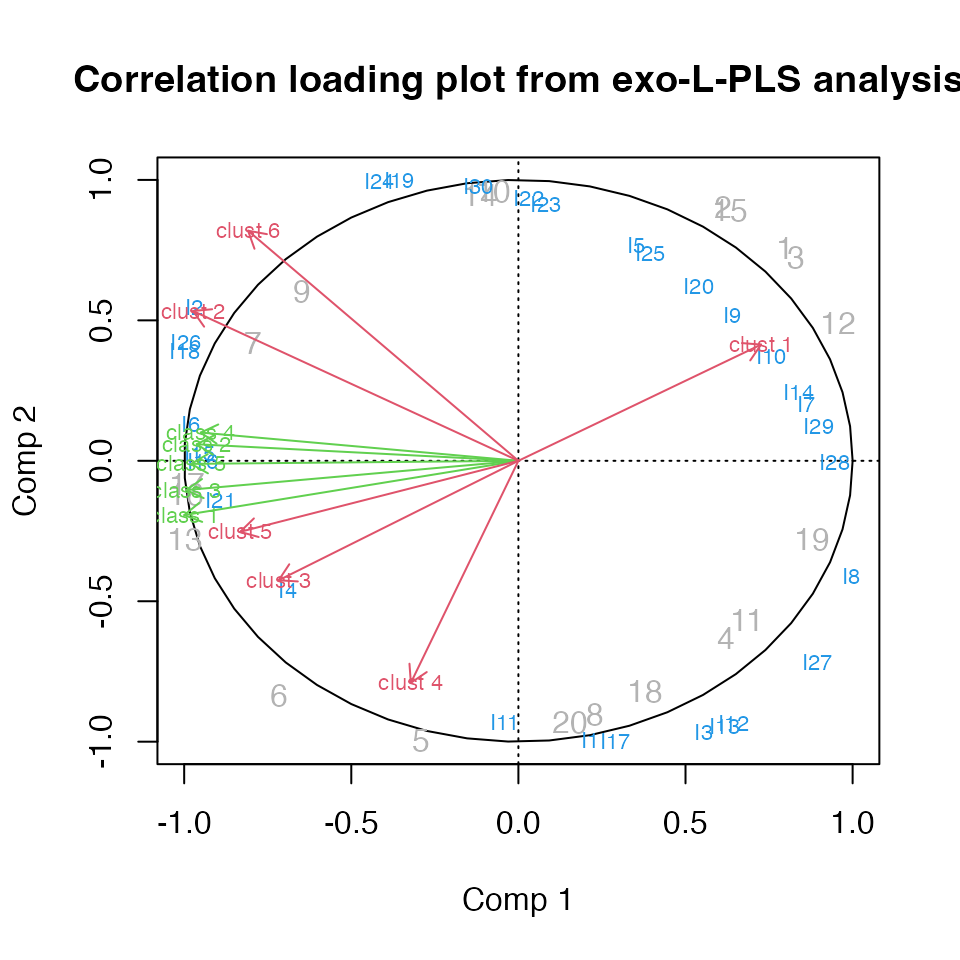

# Start the multiblock R package
library(multiblock)
#> Registered S3 method overwritten by 'plsVarSel':
#> method from
#> print.mvrVal pls
#> Registered S3 methods overwritten by 'multiblock':
#> method from
#> print.multiblock ade4
#> summary.multiblock ade4
#>
#> Attaching package: 'multiblock'
#> The following object is masked from 'package:stats':
#>
#> loadingsComplex data structures
The following methods for complex data structures are available in the multiblock package (function names in parentheses):
- L-PLS - Partial Least Squares in L configuration (lpls)
- SO-PLS-PM - Sequential and Orthogonalised PLS Path Modeling (sopls_pm)
L-PLS
To showcase L-PLS we will use simulated data specifically made for L-shaped data. Regression using L-PLS can be either outwards from X1 to X2 and X3 or inwards from X2 and X3 to X1. In the former case, prediction can either be of X2 or X3 given X1. Cross-validation is performed either on the rows of X1 or the columns of X1.
______N
| |
| |
| X3 |
| |
K|_______|
______N ________J
| | | |
| | | |
| X1 | | X2 |
| | | |
I|_______| I|_________|Simulated L-shaped data
We simulate two latent components in L shape with blocks having dimensions (30x20), (20x5) and (6x20) for blocks X1, X2 and X3, respectively.
Exo-L-PLS
The first L-PLS will be outwards. Predictions have to be accompanied by a direction.
# exo-L-PLS:
lp.exo <- lpls(X1,X2,X3, ncomp = 2) # type = "exo" is default
# Predict X1
pred.exo.X2 <- predict(lp.exo, X1new = X1, exo.direction = "X2")
# Predict X3
pred.exo.X2 <- predict(lp.exo, X1new = X1, exo.direction = "X3")
# Correlation loading plot
plot(lp.exo)
L-PLS cross-validation
Cross-validation comes with choices of directions when applying this to L-PLS since we have both sample and variable links. The cross-validation routines compute RMSECV values and perform cross-validated predictions.
# LOO cross-validation horizontally
lp.cv1 <- lplsCV(lp.exo, segments1 = as.list(1:dim(X1)[1]), trace = FALSE)
# LOO cross-validation vertically
lp.cv2 <- lplsCV(lp.exo, segments2 = as.list(1:dim(X1)[2]), trace = FALSE)
# Three-fold CV, horizontal
lp.cv3 <- lplsCV(lp.exo, segments1 = as.list(1:10, 11:20, 21:30), trace = FALSE)
# Three-fold CV, horizontal, inwards model
lp.cv4 <- lplsCV(lp.endo, segments1 = as.list(1:10, 11:20, 21:30), trace = FALSE)SO-PLS Path Modelling
The following example uses the potato data and the wine data to showcase some of the functions available for SO-PLS-PM analyses.
Single SO-PLS-PM model
A model with four blocks having 5 components per input block is fitted. We set computeAdditional to TRUE to turn on computation of additional explained variance per added block in the model.
# Load potato data
data(potato)
# Single path
pot.pm <- sopls_pm(potato[1:3], potato[['Sensory']], c(5,5,5), computeAdditional=TRUE)
# Report of explained variances and optimal number of components .
# Bootstrapping can be enabled to assess stability.
# (LOO cross-validation is default)
pot.pm
#> direct indirect total additional1 additional2 overall
#> 0 (0) 52.44 52.44 (3) 4.09 (3) 14.01 (2) 70.55Multiple paths in an SO-PLS-PM model
A model containing five blocks is fitted. Explained variances for all sub-paths are estimated.
# Load wine data
data(wine)
# All path in the forward direction
pot.pm.multiple <- sopls_pm_multiple(wine, ncomp = c(4,2,9,8))
# Report of direct, indirect and total explained variance per sub-path.
# Bootstrapping can be enabled to assess stability.
pot.pm.multiple
#> $`Smell at rest->View`
#> direct indirect total
#> 32.68 (1) 0 32.68 (1)
#>
#> $`Smell at rest->Smell after shaking`
#> direct indirect total
#> 0 (0) 40.03 40.03 (4)
#>
#> $`Smell at rest->Tasting`
#> direct indirect total
#> 0 (0) 11.52 11.52 (2)
#>
#> $`Smell at rest->Global quality`
#> direct indirect total
#> 0 (0) 25.25 25.25 (3)
#>
#> $`View->Smell after shaking`
#> direct indirect total
#> 30.97 (2) 0 30.97 (2)
#>
#> $`View->Tasting`
#> direct indirect total
#> 0 (0) 41.09 41.09 (2)
#>
#> $`View->Global quality`
#> direct indirect total
#> 0 (0) 30.87 30.87 (2)
#>
#> $`Smell after shaking->Tasting`
#> direct indirect total
#> 56.67 (3) 0 56.67 (3)
#>
#> $`Smell after shaking->Global quality`
#> direct indirect total
#> 0 (0) 70.15 70.15 (2)
#>
#> $`Tasting->Global quality`
#> direct indirect total
#> 78.12 (2) 0 78.12 (2)